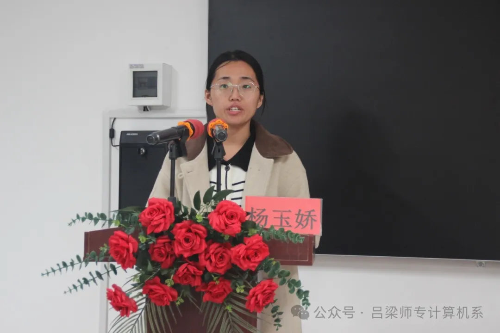

为深入学习贯彻党的二十届三中全会，全面落实习近平总书记关于青年工作的重要思想，2024年11月3日，吕梁高专计算机系分团委在11号楼307教室举行党的二十届三中全会精神宣讲会，吸引了众多青年学子参与，大家共同聆听党的最新理论成果，感悟时代脉搏！
一起观看关于【学习贯彻党的二十届三中全会】视频，并围绕“高举改革开放旗帜、以中国式现代化全面推进中华民族伟大复兴”进行讲解，让大家了解党的二十届三中全会的重要性！
系分团委组织委员闫槟鑫同学带领大家了解党的二十届三中全会精神。
通过学习，同学们对党的二十届三中全会精神有了更加深入的理解，认识到必须自觉把改革摆在更加突出位置，紧紧围绕推进中国式现代化进一步全面深化改革的重要性。
系分团委副书记王俊宝同学分享了自己对二十届三中全会会精神的学习心得和感悟。
他指出作为当代青年应培养担当精神，坚定理想信念，要不断提升自身综合素质。紧密团结在党中央周围，凝心聚力、奋发进取，为实现中华民族伟大复兴的中国梦而努力奋斗
系分团委负责人杨玉娇对此次二十届三中全会精神宣讲会做总结发言，她指出在校大学生应增强政治意识，以身作则，在反思中进步，不断学习，守正创新，注重团队协作。
此次宣讲会得到了同学们的积极响应。大家纷纷表示，通过学习，更加深刻地理解了党的二十届三中全会精神的核心要义，也更加坚定了自己的政治信仰和奋斗方向。他们表示将以此次宣讲会为契机，进一步加强学习、提升自我，争做新时代的模范先锋。